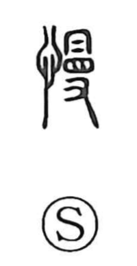

慢

Uncategorized
Kun: anadoru, okotaru | On: man
slow ・ arrogant ・ to despise ・ to neglect
Explanation
A phono-semantic graph: its phonetic is 曼 (man), which combines 冒—a head covering drawn low over the eyes—with 又, a hand, picturing a hand pulling the kerchief down and casting a sidelong glance. With the heart radical, this becomes an emotion-laden look askance, the air of contempt. The Shuowen glosses it as “to neglect,” and at root “to despise and not fear.” Hence 慢 expresses looking down on or being arrogant, and by extension carelessness or negligence, as in compounds for idle, inattentive behavior. A related form, 嫚, shows the same disdainful sideways glance applied to a woman.